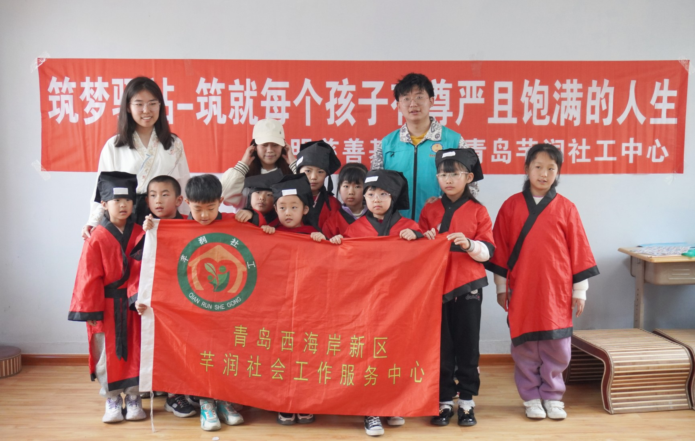
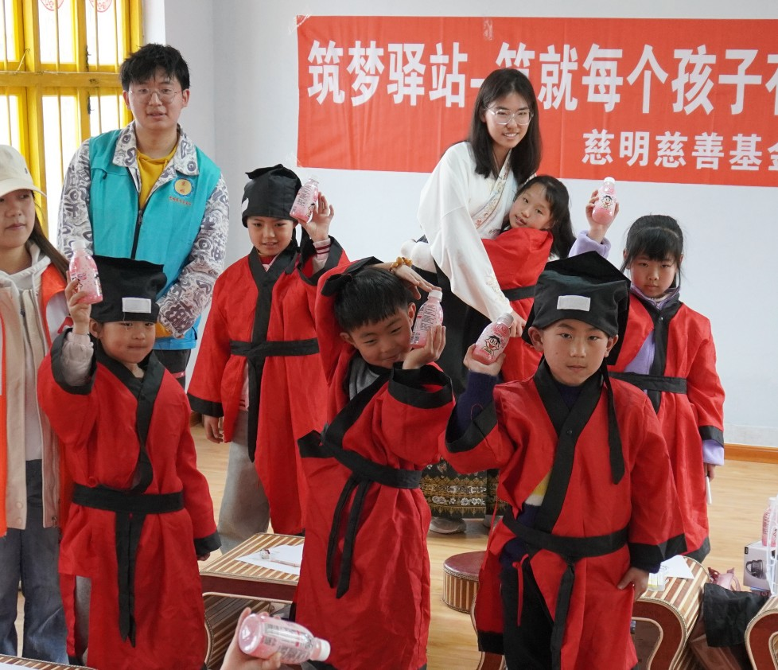
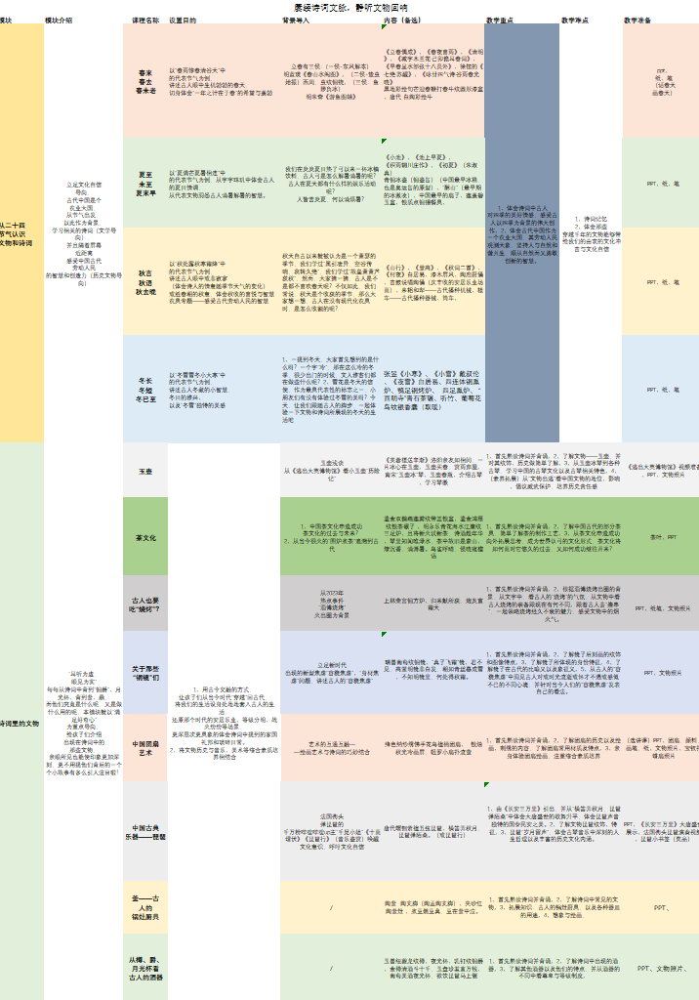
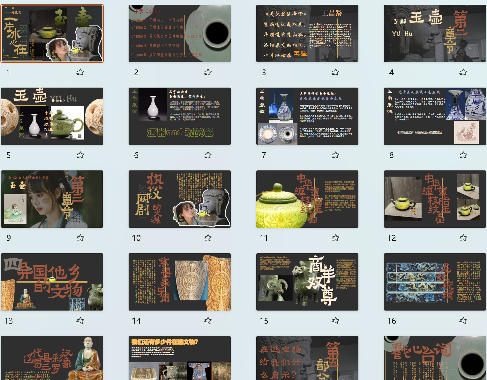
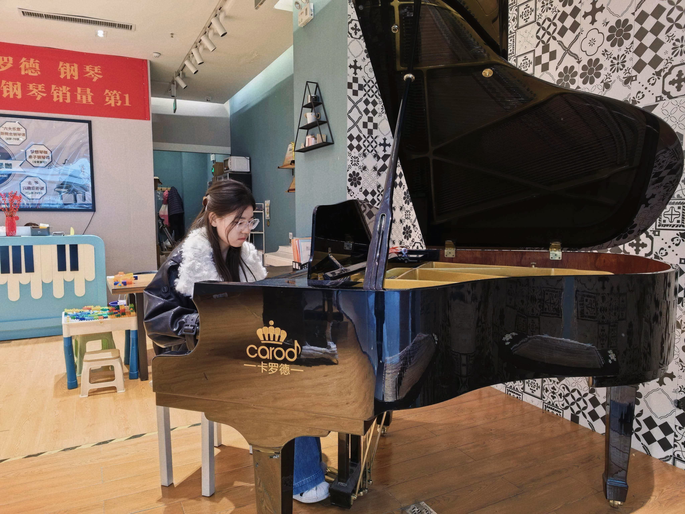
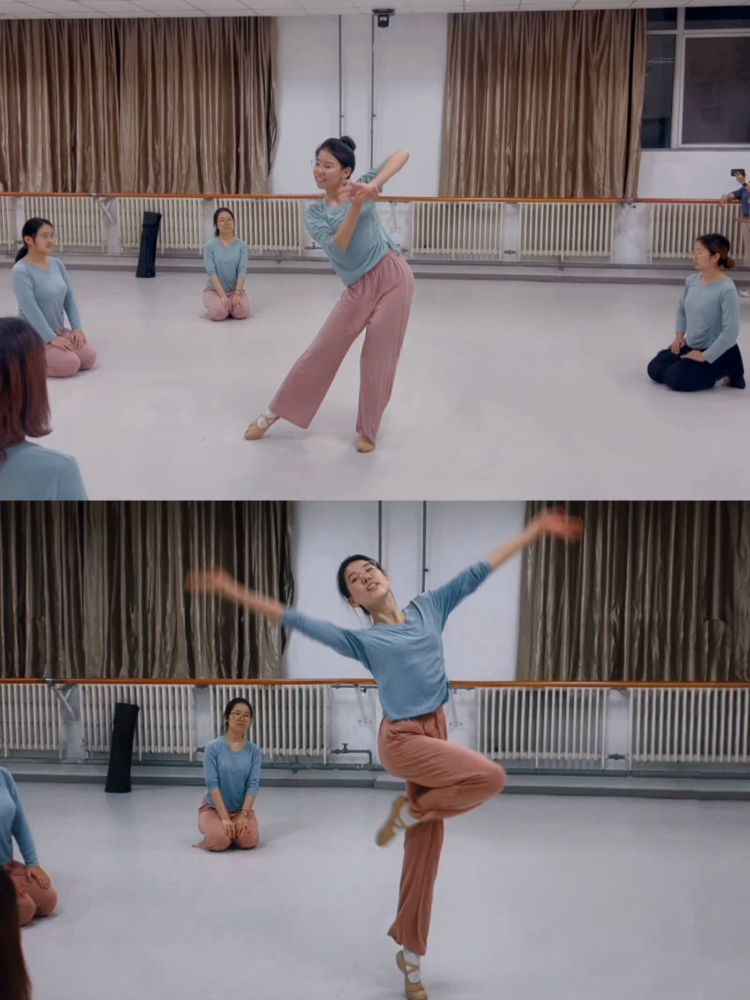
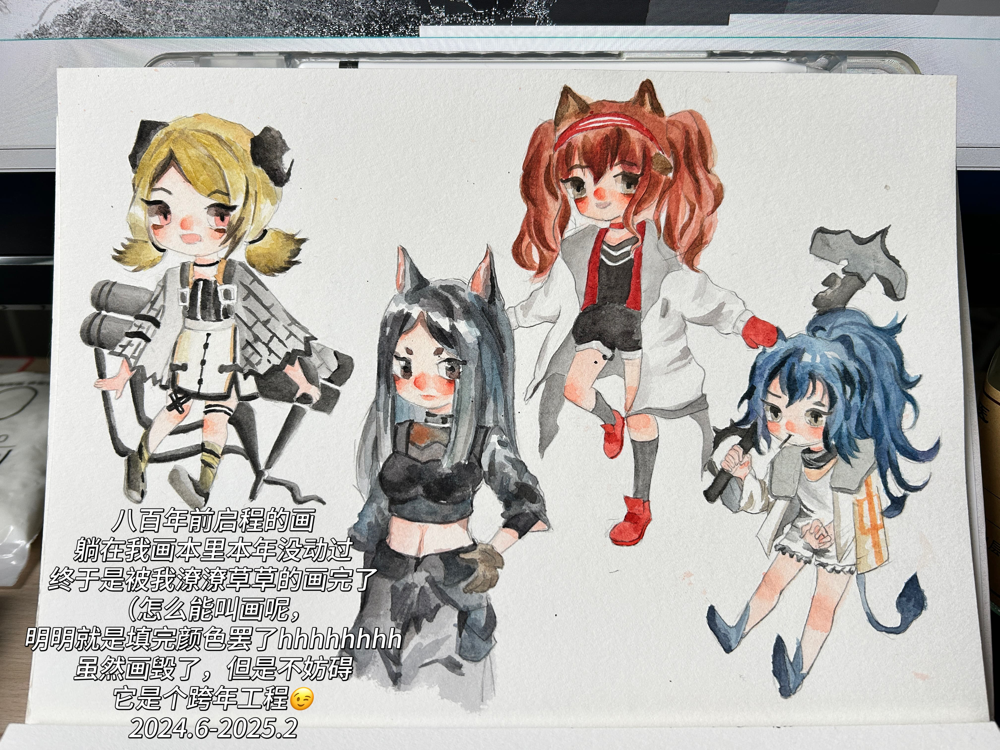
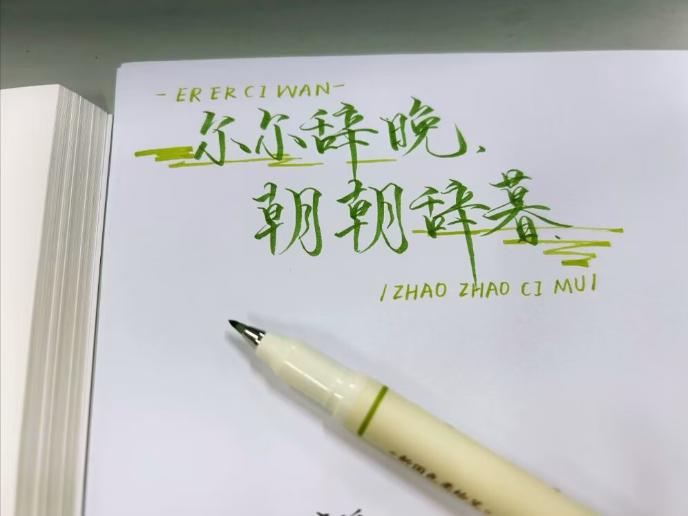

作为负责人，我不仅参与授课，还负责组织和协调整个公益教学活动，为孩子们带去知识与快乐。


在星火支教队中，我主要负责教案的撰写和课程设计，将专业的知识转化为生动有趣的课堂内容，为偏远地区教育贡献一份力量。

自幼学习钢琴并达到演奏级水平，曾斩获德国欧米勒国际钢琴公开赛金奖。在大学里，它更是我课余时间里一位不可或缺的朋友。

从4岁起学习舞蹈，并取得中国舞十级证书。12年的舞蹈生涯教会了我坚韧和不放弃，也让我在大学里面对高强度学习科研任务时，依然能保持良好的体能与心态。


书法和画画是陪伴我最久的两位朋友。16年的学习生涯，我不但获得了书法和画画十级证书，也收获了在喧嚣世界中迅速平静下来思考的能力。
大一时参加校级辩论赛，作为三辩，获得了总决赛亚军的成绩，这段经历也锻炼了我的表达能力和应变能力。